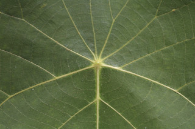
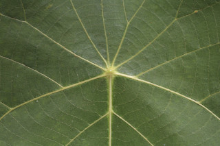
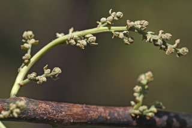
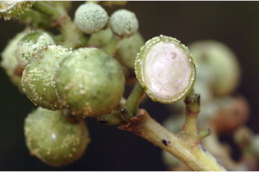
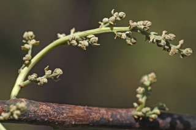
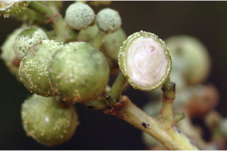

Trees up to 12 m tall.
12 ಮೀ. ಎತ್ತರದವರೆಗೆ ಬೆಳೆಯುವ ಮರಗಳು.
12 മീറ്റര് വരെ ഉയരമുളള മരങ്ങള്.
மரங்கள் 12மீ. வரை வளரக்கூடியது
Bark brownish, small lenticellate; blaze red.
ತೊಗಟೆ ಕಡು ಕಂದು ಬಣ್ಣದಲ್ಲಿದ್ದು ಸಣ್ಣ ವಾಯುವಿನಿಮಯ ರಂಧ್ರಗಳಿಂದ ಕೂಡಿರುತ್ತದೆ;ಕಚ್ಚು ಮಾಡಿದ ಜಾಗ ಕೆಂಪಾಗಿರುತ್ತದೆ.
ചെറിയ ശ്വസനരന്ധ്രങ്ങളുളള, തവിട്ട്നിറത്തിലുളള പുറംതൊലി; വെട്ട്പാടിന് ചുവപ്പു നിറം.
மரத்தின் பட்டை ப்ரவுன் நிறமானது, சிறிய லெண்டிசெல் கொண்டது; உள்பட்டை சிவப்பு நிறமானது.
Branchlets stout, subglabrous, glaucous
ಕಿರುಕೊಂಬೆಗಳು ಧೃಡವಾಗಿರುತ್ತವೆ ಮತ್ತು ಉಪ-ರೋಮರಹಿತವಾಗಿದ್ದು ಮಾಸಲು ಬೂದು ಹಸಿರು ಬಣ್ಣ ಹೊಂದಿರುತ್ತವೆ.
നീലരാശി കലര്ന്ന, ഉപഅരോമിലമായ, ദൃഢമായ ഉപശാഖകള്.
சிறிய நுனிக்கிளைகள் தடித்தது, மிக நுண்ணிய உரோமங்களுடையது அல்லது உரோமங்களற்றது, மெழுகு பூசினாற் போல் நீலம் கலந்த பச்சை நிறமானது.
Exudates resinous red sap from cut ends of branches and branchlets.
ಕತ್ತರಿಸಿದ ಕವಲುಗಳ ಮತ್ತು ಕಿರುಕೊಂಬೆಗಳ ತುದಿಯಲ್ಲಿ ಕೆಂಪು ಅಂಟು ಸಸ್ಯ ರಸ ಸ್ರವಿಸುತ್ತದೆ.
ശാഖകളുടെയും ഉപശാഖകളുടെയും മുറിവില്നിന്നും കൊഴുത്ത ചുവന്ന സ്രവം പുറത്തുവരുന്നു.
கிளைகள் அல்லது சிறிய நுனிக்கிளைகள் வெட்டப்படும் போது சிவப்பு நிறமான திரவத்தை சுரக்ககூடியது.
Leaves simple, alternate, spiral; stipules 1.2 cm long, lanceolate, caducous; petiole 7-26 cm long, terete, subglabrous, swollen at base; lamina 13-32 x 8-18 cm, distinctly peltate, broadly ovate to orbiculate, apex acuminate or sometimes acute, margin entire or minutely denticulate, subcoriaceous, glabrous above, pubescent and resinous yellow glands beneath; nerves up to 10, radiating from the centre; tertiary_nerves obliquely_percurrent.
ಎಲೆಗಳು ಸರಳವಾಗಿದ್ದುಪರ್ಯಾಯ ಮತ್ತು ಸುತ್ತು ಜೋಡನಾ ವ್ಯವಸ್ಥೆಯಲ್ಲಿರುತ್ತವೆ. ಕಾವಿನೆಲೆಗಳು 1.2 ಸೆಂ.ಮೀ. ಉದ್ದವಿದ್ದು ಭರ್ಜಿಯ ಆಕಾರದಲ್ಲಿದ್ದು ಉದುರಿ ಹೋಗುವಂತವು; ತೊಟ್ಟುಗಳು 7 –26 ಸೆಂ.ಮೀ.ವರೆಗಿನ ಉದ್ದವಿದ್ದು ದುಂಡಗಿರುತ್ತವೆ ಮತ್ತು ಉಪ-ರೋಮರಹಿತವಾಗಿದ್ದು ಬುಡದಲ್ಲಿ ಊದಿಕೊಂಡಿರುತ್ತವೆ; ರೀಯದಾಗಿರುತ್ತವೆ; ಪತ್ರಗಳು 13 -32 X 8 -18 ಸೆಂ. ಮೀ. ವರೆಗಿನ ಗಾತ್ರದಲ್ಲಿದ್ದು ಪ್ರಮುಖವಾಗಿ ತಳಭಾಗದ ಮಧ್ಯದಲ್ಲಿರುವ ತೊಟ್ಟನ್ನು ಹೊಂದಿರುತ್ತವೆ ; ಪತ್ರಗಳ ಆಕಾರ ಅಂಡದಿಂದ ವೃತ್ತವನ್ನು ಹೋಲುತ್ತವೆ;ತುದಿ ಕ್ರಮೇಣವಾಗಿ ಚೂಪಾಗುವ ಅಥವಾ ಕೆಲವು ವೇಳೆ ಚೂಪಾದ ಮಾದರಿಯಲ್ಲಿರುತ್ತವೆ.ಪತ್ರದ ಅಂಚು ಸೂಕ್ಷ್ಮ ದಂತಿತವಾಗಿರುತ್ತದೆ; ಮೇಲ್ಮೈ ಉಪ- ತೊಗಲ್ಲನ್ನೋಲುವ ಮಾದರಿಯಲ್ಲಿದ್ದು ಪತ್ರದ ಮೇಲ್ಭಾಗ ರೋಮರಹಿತವಾಗಿರುತ್ತದೆ ಮತ್ತು ತಳಭಾಗ ಮೃದುತುಪ್ಪಳದಿಂದ ಕೂಡಿದ್ದು ಅಂಟುಸಹಿತವಾದ ಹಳದಿ ಬಣ್ಣದ ರಸಗ್ರಂಥಿಗಳ ಸಮೇತವಿರುತ್ತದೆ;ನಾಳಗಳು 10ರವರೆಗೆ ಇದ್ದು ಮಧ್ಯದಿಂದ ಹರಡುತ್ತವೆ; ಮೂರನೇ ದರ್ಜೆಯ ನಾಳಗಳು ಓರೆಯಾಗಿದ್ದು ಎಲೆ ದಿಂಡಿಗೆ ಅಡ್ಡವಾಗಿ ಕೂಡುವಂತವು. .
ലഘുവായ ഇലകള്, ഏകാന്തരക്രമത്തില്, സര്പ്പിളമായടുക്കിയിരിക്കുന്നു; കുന്താകാരത്തില്, 1.2 സെ.മീ നീളമുളള, എളുപ്പം കൊഴിഞ്ഞ്പോകുന്ന അനുപര്ണ്ണങ്ങള്; കീഴറ്റം വീര്ത്ത്, ഉപഅരോമിലമായ, ഉരുണ്ട ഇലഞെട്ടിന് 7 സെ.മീ മുതല് 2.6 സെ.മീ വരെ നീളം; പത്രഫലകത്തിന് 13 സെ.മീ മുതല് 32 സെ.മീ വരെ നീളവും 8 സെ.മീ മുതല് 18 സെ.മീ വരെ വീതിയും, വ്യക്തമായും പെല്ട്ടേറ്റുമാണ്, ആകൃതി അണ്ഡാകാരം തൊട്ട് വൃത്താകാരം വരെയുമാണ്, പത്രാഗ്രം ദീര്ഘമോ ചിലപ്പോള് നിശിതമോ ആവാം, ഉപചര്മ്മില പ്രകൃതം, മുകളില് അരോമിലമാണ്, കീഴെ നനുത്ത രോമിലവും കൊഴുത്ത മഞ്ഞസ്രവമുളള ഗ്രന്ഥികളുളളതുമാണ്; മധ്യത്തില് നിന്നും പ്രസരിക്കുന്ന 10 വരെ ഞരമ്പുകള്; ത്രിതീയ ഞരമ്പുകള് ചരിഞ്ഞ പെര്കറന്റ് വിധത്തിലാണ്.
இலைகள் தனித்தவை, மாற்றுஅடுக்கமானவை, சுழல் போல் அமைந்தது; இலையடிச்செதில் 1.2 செ.மீ. நீளமானது, ஈட்டி வடிவானது, எளிதில் உதிரக்கூடியது; இலைக்காம்பு 7-26 செ.மீ., நீளமானது, குறுக்குவெட்டுத் தோற்றத்தில் வளையமானது, உரோமங்களற்றது அல்லது நுண்ணிய உரோமங்களுடையது, காம்பு தளத்தில் உப்பியது; இலை அலகு 13-32 X 8-18 செ.மீ., பெல்டேட், (அலகின் பின்புறத்தில் அதன் நடுவில் காம்பு கொண்டது), அகன்ற முட்டை முதல் வட்டவடிவானது (ஆர்பிக்குலார்), அலகின் நுனி அதிக்கூரியது அல்லது சிலசமயங்களில் கூரியது, அலகின் விளிம்பு முழுமையானது அல்லது நுண்ணிய பற்களுடையது, சப்கோரியேசியஸ், மேற்பகுதி உரோமங்களற்றது, அலகின் கீழ்பரப்பில் உரோமங்களுடையது மற்றும் பிசின் (ரெசின்) மஞ்சள் சுரப்பிகள் கொண்டது; நரம்புகள் 10 வரை, இலையின் நடுவிலிருந்து விளிம்பை நோக்கியவாறு காணப்படும்; மூன்றாம் நிலை நரம்புகள் சாய்ந்தவாறு பெர்க்கரண்ட்.
Flower unisexual, dioecious; inflorescence axillary panicles with straight branches, bracts broadly ovate, dentate without apical glands; male flowers in clusters per bract; female flowers few per bract.
ಹೂಗಳು ಏಕಲಿಂಗಿಗಳಾಗಿದ್ದು ಪ್ರತ್ಯೇಕ ಸಸ್ಯಗಳಲ್ಲಿರುತ್ತವೆ;ಪುಷ್ಪಮಂಜರಿಗಳು ಪುನರಾವೃತ್ತಿಯಾಗಿ ಕವಲೊಡೆಯುವ ಮಾದರಿಯವುಗಳಾಗಿದ್ದು ನೆಟ್ಟನೆಯ ಕವಲುಗಳನ್ನು ಹೊಂದಿರುತ್ತವೆ; ಹೂಗಳ ಪತ್ರಕಗಳು ವಿಶಾಲ ಅಂಡಾಕೃತಿ ಹೊಂದಿದ್ದು ಅಗ್ರ ರಸಗ್ರಂಥಿ ರಹಿತವಾದ ದಂತಿತವಾದ ಅಂಚನ್ನು ಹೊಂದಿರುತ್ತವೆ; ಗಂಡು ಹೂಗಳು ಪ್ರತಿ ಹೂ-ಪತ್ರಕದಲ್ಲಿನ ಗುಚ್ಛಗಳಲ್ಲಿ ಇರುತ್ತವೆ; ಪ್ರತಿ ಹೂ -ಪತ್ರಕ್ಕೆ ಕೆಲವು ಹೆಣ್ಣು ಹೂಗಳನ್ನೊಳಗೊಂಡ ಗುಚ್ಛಗಳು ಇರುತ್ತವೆ.
പൂക്കള് ഏകലിംഗികളാണ്, ഡയീഷ്യസും; പൂങ്കുലകള് നേേെരയുളള ശാഖകളുളള കക്ഷീയ പാനിക്കിളുകളാണ്, അഗ്രഗ്രന്ഥിയുളള ദന്തങ്ങളോടുകൂടിയ സഹപത്രങ്ങള്ക്ക് വീതിയേറിയ അണ്ഡാകൃതിയാണ്; ആണ്പൂക്കള് ഓരോ സഹപത്രത്തിലും കൂട്ടമായുണ്ടാകുന്നു; പെണ്പൂക്കള് ഓരോ സഹപത്രത്തിലും കു
மலர்கள் ஓர்பாலானவை; ஈரகம் கொண்டவை; மஞ்சரி இலைக்கோணத்திலுள்ள பேனிக்கிள், அதன் கிளை நேரானது, பூவடிச்செதில் அகன்ற முட்டை வடிவம், பற்களுடையது, அதன் நுனியில் சுரப்பிகள் கொண்டது; ஆண்மலர்கள் கொத்தாக ஒவ்வொரு செதிலிலும் காணப்படும்; பெண்மலர்கள் குறைந்த எண்ணிக்கையில
Capsule, globose, covered with glandular scales, 1 or 2-valved cocci; seeds globose, 1 per cocci.
ಸಂಪುಟ ಫಲ ಗೋಳಾಕಾರದಲ್ಲಿದ್ದು ರಸಗ್ರಂಥಿ ಸಮೇತವಾದ ಶಲ್ಕೆಗಳಿಂದ ಆವೃತವಾಗಿರುತ್ತದೆ ಮತ್ತು 1 ಅಥವಾ 2 ಹಾಲೆಗಳುಳ್ಳ ಮರಿಫಲಗಳನ್ನೊಳಗೊಂಡಿರುತ್ತದೆ;ಬೀಜಗಳು ಗೋಳಾಕಾರದವುಗಳಾಗಿದ್ದು ಪ್ರತಿ ಮರಿಫಲದಲ್ಲಿ ಒಂದು ಬೀಜವಿರುತ್ತದೆ.
ഓരോ അറയിലും ഓരോ ഗോളാകാര വിത്തുളള കായ, ഒന്നോ രണ്ടോ അറയുളളതും ഗ്രന്ഥികള് നിറഞ്ഞ ശല്ക്കങ്ങളാല് പൊതിയപ്പെട്ട ഗോളാകാര കാപ്സ്യൂള് ആണ്.
வெடிகனி (கேப்சூல்), கோளவடிவானது, சுரப்பிகளுடைய செதில் போன்ற அமைப்பு சூழ்ந்திருக்கும், 1 அல்லது 2-அறைகள் கொண்ட உருண்டையானது (காக்கை); விதைகள் கோளவடிவானது, 2 கொண்டது.


 

 


